Экран оператора CRM: 6 вариантов, советую наш стиль с перепиской в три колонки
Вывод. Нарисовал 6 живых макетов экрана менеджера первой линии поверх Chatwoot. Основой советую вариант 6 «в нашем стиле» (как кабинеты Elite Rose и EV), а внутрь взять переписку из варианта 1, таймер и горячие клавиши из 3, пульт из 5 и телефонную шторку записи из 4. Первый рабочий шаг – около 11 дней, весь набор – около 18 дней (оценка, час = 1000 ₽, день = 8 часов).
Все макеты статичные, данные в них – пример. Каждый открывается по ссылке, работает на 1440 и 390 px, есть светлая и тёмная тема (кнопка ◐).
Нужно от тебя
- Выбрать букву в вопросе внизу страницы.
- Подтвердить этапы воронки: Новый → Узнали машину → Назвали цену → Записан → Приехал. Если этапы другие – назови.
- Прайс для черновиков ответа: откуда брать цены (таблица, сайт, 1С), чтобы менеджеру не набирать цену руками.
1. Пять вариантов по известным приёмам – у каждого свой сильный ход
Вариант 1. Три колонки: список · переписка · карточка клиента
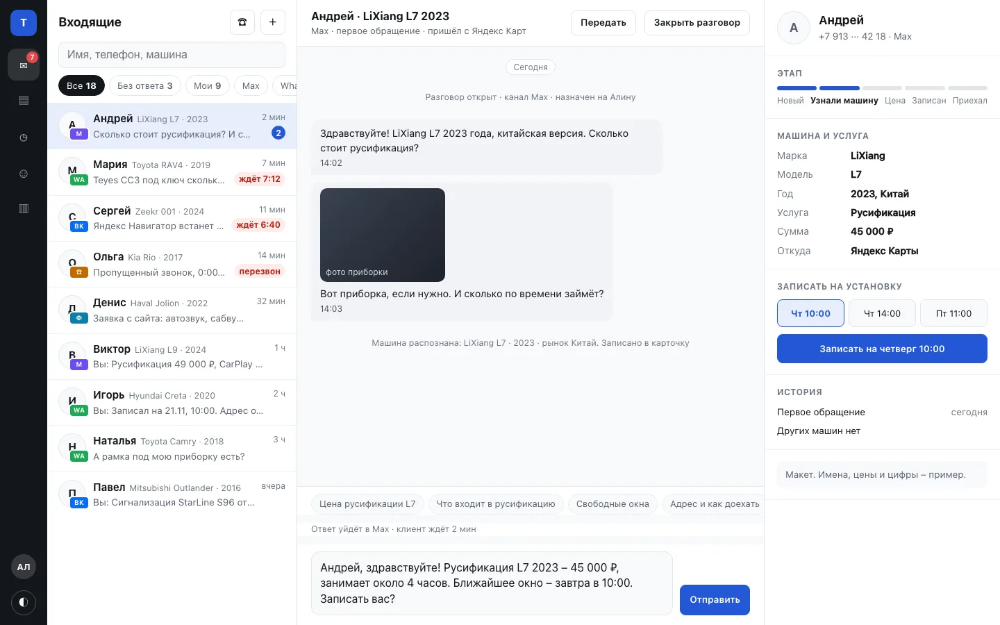
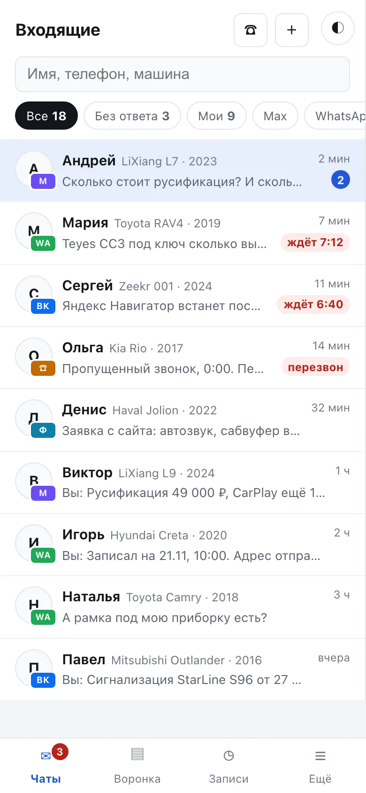
- Идея: привычный мессенджер. Слева все каналы в одном списке с фильтрами и «ждёт 7:12», в центре переписка с готовыми ответами, справа машина, этап, сумма, откуда узнал и кнопка записи на свободное окно.
- Кому удобно: менеджеру, который весь день в чатах. Не теряется контекст клиента.
- Минус: не видно воронку целиком, владельцу нужен отдельный экран цифр.
- Срок: около 8 дней (≈ 64 000 ₽).
Вариант 2. Воронка-канбан, переписка боковой панелью
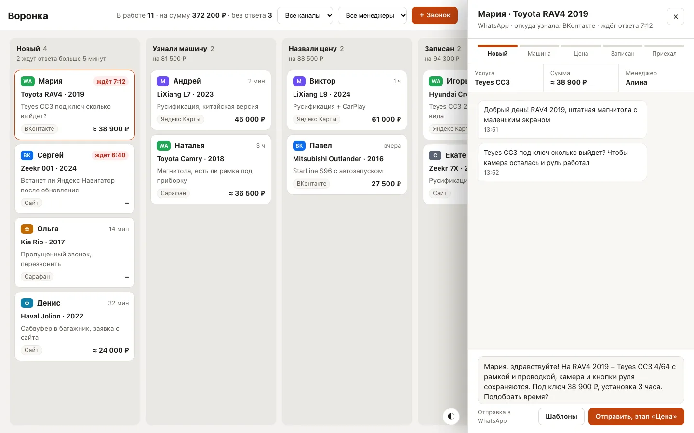
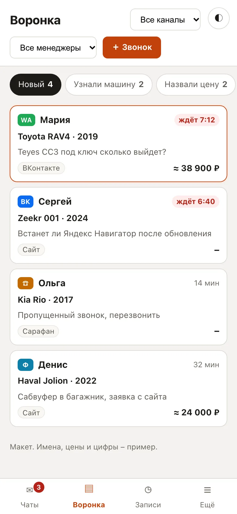
- Идея: лиды карточками по этапам с суммой в каждом столбце. Нажал на карточку – справа переписка, ответ сразу двигает лида на следующий этап.
- Кому удобно: тому, кто ведёт лида до записи и следит за деньгами в работе.
- Минус: при 20+ новых в час доска захламляется, отвечать удобнее из списка.
- Срок: около 9 дней (≈ 72 000 ₽), перетаскивание карточек – основная работа.
Вариант 3. Одна очередь: один разговор на весь экран
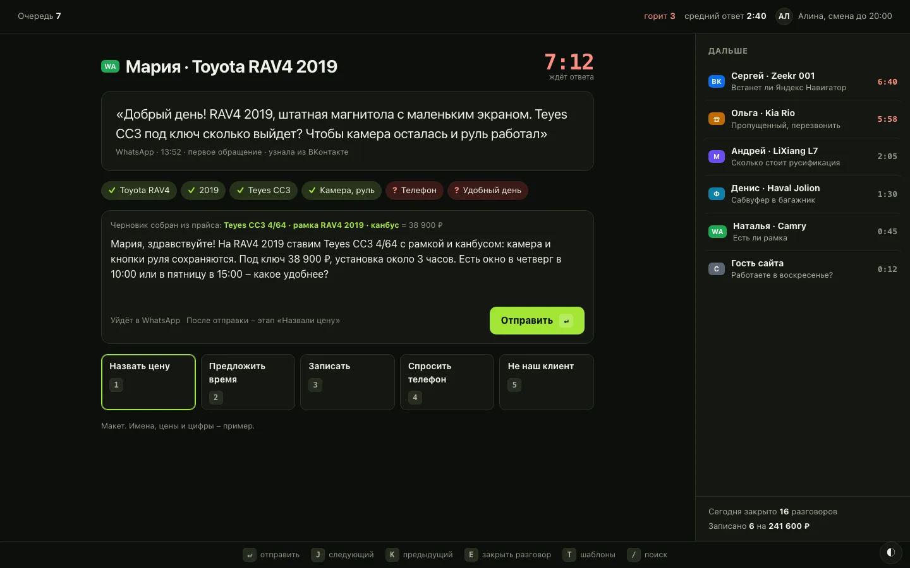
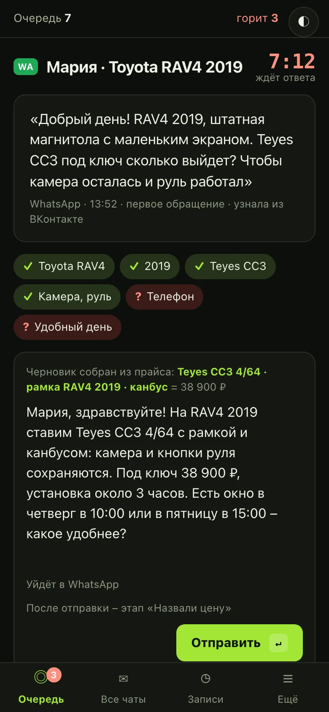
- Идея: менеджер видит только следующий разговор: крупно вопрос клиента, таймер ожидания, что уже известно (машина, год, телефон), черновик ответа с ценой из прайса и 5 кнопок шага с цифрами 1–5 на клавиатуре. Справа – кто следующий.
- Кому удобно: при потоке обращений, когда важна скорость первого ответа.
- Минус: нужен прайс в таблице, иначе черновик пустой. Не видно общей картины.
- Срок: около 9 дней (≈ 72 000 ₽) с черновиком из прайса.
Вариант 4. Телефон как основной инструмент
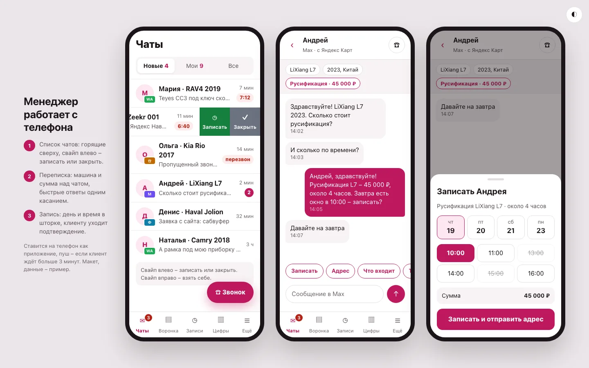
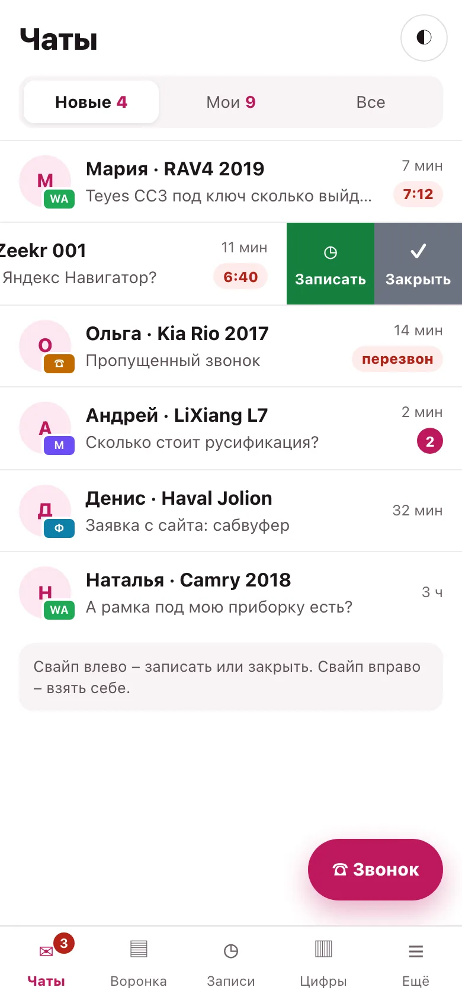
- Идея: приложение на телефон (ставится с сайта, без магазина приложений). Таб-бар внизу, свайп влево по чату – «Записать» или «Закрыть», кнопка «＋ Звонок», запись в шторке: день, время, сумма, клиенту уходит адрес. Пуш, если клиент ждёт больше 3 минут.
- Кому удобно: менеджеру не за столом и тебе – ответить с телефона.
- Минус: длинную переписку и цифры на телефоне читать хуже, компьютерный экран всё равно нужен.
- Срок: около 10 дней (≈ 80 000 ₽), пуши и свайпы – основная работа.
Вариант 5. Пульт владельца
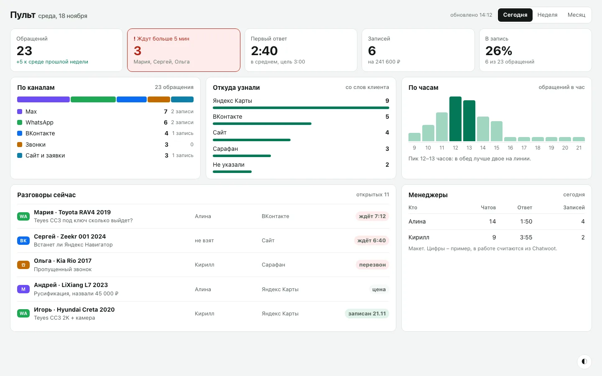
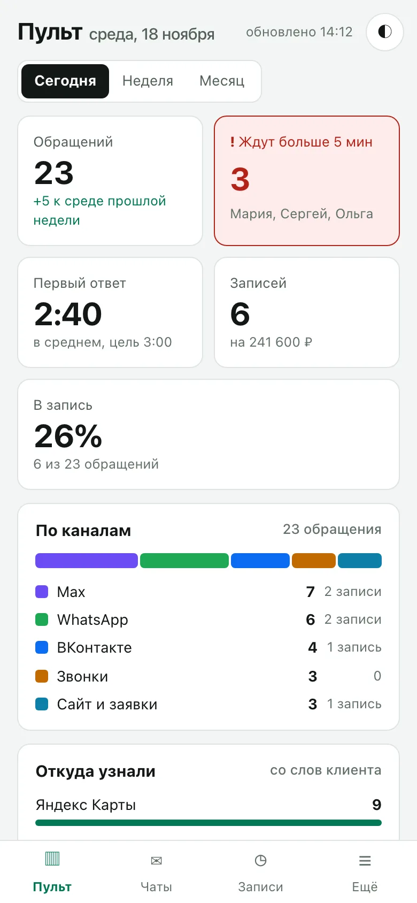
- Идея: сверху цифры дня: обращения, кто ждёт больше 5 минут (красным, с именами), средний первый ответ, записи и сумма, доля в запись. Ниже – каналы, «откуда узнали», нагрузка по часам, живые разговоры и менеджеры.
- Кому удобно: тебе – за 10 секунд понять, как работает линия.
- Минус: это не рабочий экран менеджера, а дополнение к любому из вариантов.
- Срок: около 6 дней отдельно (≈ 48 000 ₽) или +3 дня вкладкой к другому варианту.
2. Шестой вариант – в нашем стиле, его быстрее всего довести
Вариант 6. Кабинет как Elite Rose и EV: шапка-вкладки, плитки, доска
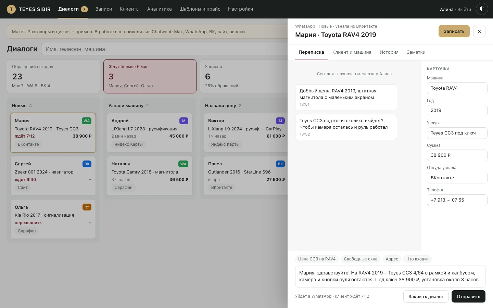
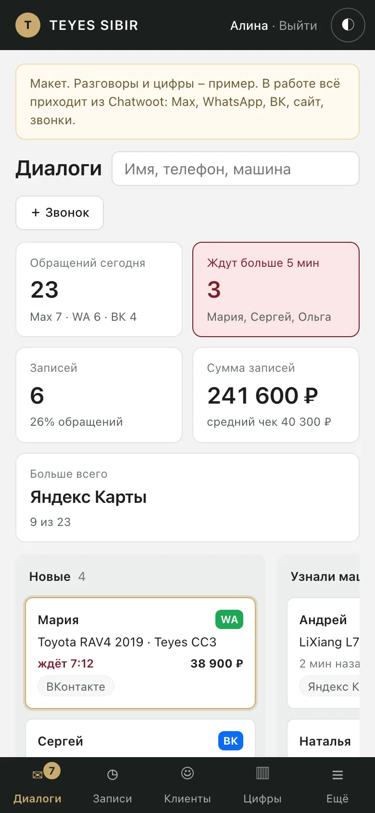
- Идея: тёмная шапка с вкладками и золотом, плитки цифр дня, доска диалогов по этапам и правая панель как карточка товара в эталоне: переписка, карточка клиента с машиной и источником, шаблоны ответов, «Записать».
- Кому удобно: всем, кто уже видел наши кабинеты, – учить заново нечего. Шапка, плитки и доска переносятся с готового кода Elite Rose, вход – как у EV, с СВЕРХ админом.
- Минус: панель переписки узкая, при долгой переписке тесно. Лечится перепиской из варианта 1.
- Срок: около 9 дней (≈ 72 000 ₽).
3. Лучше совместить: оболочка 6, переписка 1, куски 3–5
| Шаг | Что делаем | Срок | Деньги |
|---|---|---|---|
| 1 | Оболочка 6 + переписка в три колонки из 1 при открытии диалога + таймер «ждёт» и клавиши из 3 | ≈ 11 дней | ≈ 88 000 ₽ |
| 2 | Вкладка «Аналитика» – пульт из 5 | ≈ 3 дня | ≈ 24 000 ₽ |
| 3 | Телефон: таб-бар, свайпы, шторка записи и пуши из 4 | ≈ 4 дня | ≈ 32 000 ₽ |
| Итого | ≈ 18 дней | ≈ 144 000 ₽ |
Это оценка, не смета: точнее скажу после проверки API Chatwoot на наших каналах (Max и звонки). Во всех сроках уже заложена общая основа: вход, связь с Chatwoot, отправка в каналы, поля «машина, источник, сумма, этап».
Вопрос: какой берём?
- А – совмещаем, как советую: оболочка 6, переписка 1, дальше шаги 2 и 3.
- Б – только вариант 6 как есть.
- В – другой вариант основой (назови номер).
- Г – ни один не зашёл, рисую заново (скажи, что мимо).
Что раскрыть
- Как каждый экран ходит в Chatwoot по API и что придётся хранить у себя (этап, сумма, источник).
- Черновик ответа с ценой из прайса: просто подстановка или ИИ, и сколько стоит ИИ на обращение.
- Как считать «ждёт больше 5 минут» ночью и в выходные.